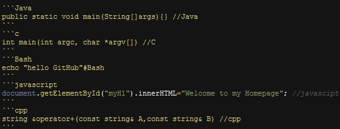

简介
hexo是一个快速、简洁且高效的静态站点生成框架，它基于 Node.js 。 它有许多的主题框架,小编选择的时Next。文档讲解的非常详细,小编就不在这里为大家介绍文档了，就写一些小编出错和注意的点。
安装
安装 Hexo 只需几分钟时间，可以参考官网，若你在安装过程中遇到问题或无法找到解决方式，请留言，我会尽力解决你的问题。
安装前提
如果你的电脑中尚未安装所需要的程序，请根据以下安装指示完成安装
安装步骤
安装
hexo-cli1
npm install -g hexo-cli
安装完成后在
指定的目录下执行hexo初始化1
hexo init
生成静态文件
1
hexo g
启动本地静态服务器
1
hexo s
发布项目
1
hexo d
常见问题 - 图标显示
Hexo 中的图标使用的是 Font Awesome ,所以，我们的博客已经自带了 Font Awesome 中的所有图标，基本可以满足我们的所有需求，我们可以去 Font Awesome 中查找我们想要使用的图标。
1 | <i class="fa fa-github"></i> |
常见问题 - 代码压缩优化
在项目的根目录下，执行以下命令：
1 | cnpm install gulp -g |
然后在 gulpfile.js 里面写上相关代码，详情查看 源码 。
然后执行 gulp min 就会根据 gulpfile.js 中的配置，对 public 目录中的静态资源文件进行压缩。
鼠标右键 -> 查看网页源代码，可以看到已经是压缩过的。
常见问题 - 字数统计、阅读时长
Next主题已经集成了字数统计、阅读时长,我们只需要在主题配置文件_config.yml中打开wordcount统计功能即可
1 | # Post wordcount display settings |
如果还出现字数统计和阅读时长失效的情况，一般是因为没有安装 hexo-wordcount 插件，查看 Hexo 插件：
1 | hexo --debug |
安装 hexo-wordcount 插件
1 | npm i --save hexo-wordcount |
常见问题 - 自动备份Hexo博客源文件
原理
通过监听Hexo的事件来完成自动执行Git命令完成自动备份呢？通过查阅Hexo文档，找到了Hexo的主要事件，见下表：
| 事件名 | 事件发生时间 |
|---|---|
| deployBefore | 在部署完成前发布 |
| deployAfter | 在部署成功后发布 |
| exit | 在 Hexo 结束前发布 |
| generateBefore | 在静态文件生成前发布 |
| generateAfter | 在静态文件生成后发布 |
| new | 在文章文件建立后发布 |
于是我们就可以通过监听Hexo的deployAfter事件，待上传完成之后自动运行Git备份命令，从而达到自动备份的目的。
步骤
在命令中键入以下命令，完成
shelljs模块的安装：1
npm install --save shelljs
编写自动备份脚本,在Hexo根目录的
scripts文件夹下新建一个js文件，文件名随意取。如果没有scripts目录，请新建一个1
2
3
4
5
6
7
8
9
10
11
12
13
14
15
16
17
18
19
20
21
22
23
24
25
26
27
28
29
30
31
32
33
34
35require('shelljs/global');
try {
hexo.on('deployAfter', function() {//当deploy完成后执行备份
run();
});
} catch (e) {
console.log("产生了一个错误<(￣3￣)> !，错误详情为：" + e.toString());
}
function run() {
if (!which('git')) {
echo('Sorry, this script requires git');
exit(1);
} else {
echo("======================Auto Backup Begin===========================");
cd('D:/hexo'); //此处修改为Hexo根目录路径
if (exec('git add --all').code !== 0) {
echo('Error: Git add failed');
exit(1);
}
if (exec('git commit -am "Form auto backup script\'s commit"').code !== 0) {
echo('Error: Git commit failed');
exit(1);
}
if (exec('git push origin master').code !== 0) {
echo('Error: Git push failed');
exit(1);
}
echo("==================Auto Backup Complete============================")
}
}其中，需要修改第17行的
D:/hexo路径为Hexo的根目录路径。（脚本中的路径为博主的Hexo路径）如果你的Git远程仓库名称不为origin的话，还需要修改第28行执行的push命令，修改成自己的远程仓库名和相应的分支名。
常见问题 - 代码高亮
小编刚开始写的代码往往是这样的，[Next代码高亮]完全没有作用(http://theme-next.iissnan.com/theme-settings.html#syntax-highlight-scheme)
1
require('shelljs/global');
原来是没有在三个`后加上语言名，如java。
1
require('shelljs/global');